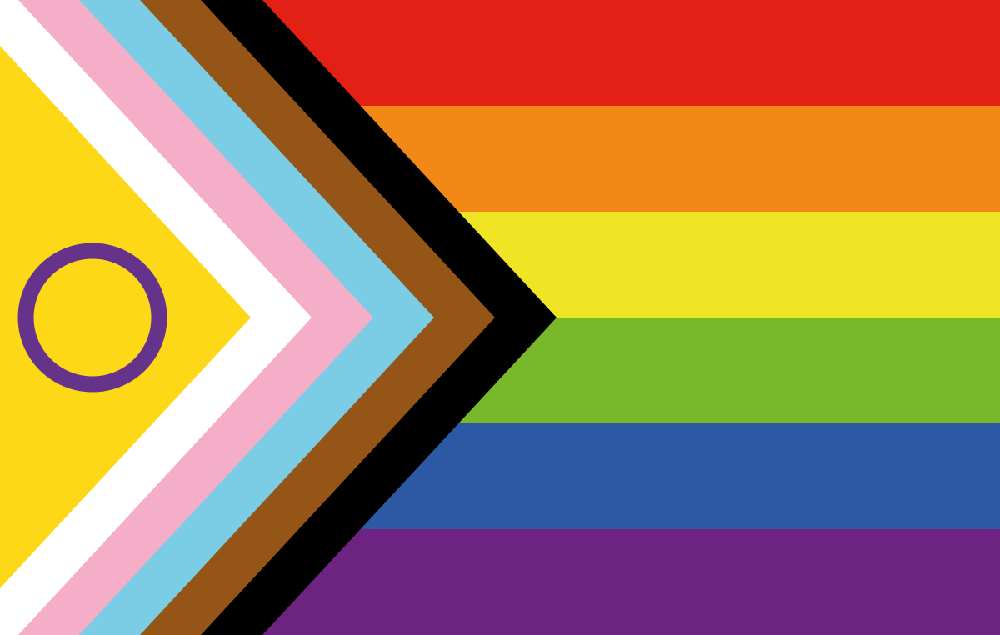

The Progress Pride Flags

The Progress Pride Flag
The Progress Pride flag was created by Daniel Quasar in 2018. Xe was inspired to design it after seeing Gilbert Baker's original pride flag design and various redesigns that added stripes to the pride flag to represent more 2SLGBTQIA+ people, like the Philadelphia Pride flag and Seattle Pride flag. Some people found these redesigns confusing and unappealing, so Quasar opted to rearrange the new stripes into a chevron shape to emphasize the groups they represent and make the flag more appealing.
Each color of the Progress Pride flag has its own meaning (many taken from the flags it was inspired by):
- White, Pink, and Light Blue: transgender and nonbinary people, originally included in the transgender flag
- Black and Brown: LGBTQ+ people of color, including their experiences, contributions, and struggles within the community; Quasar says the black stripe also represents "those living with AIDS and the stigma and prejudice surrounding them, and those who have been lost to the disease"
- Red: life
- Orange: healing
- Yellow: sunlight
- Green: nature
- Blue: peace, harmony
- Purple: spirit
In regards to the chevron shape, Quasar states, "The arrow points away from the hoist to show forward movement, and to show that progress still needs to be made."

The Intersex-Inclusive Progress Pride Flag
The Intersex-Inclusive Progress Pride flag was created by Valentino Vecchietti in 2021. Her design took Quasar's Progress Pride flag and added a triangle resembling the intersex flag to the chevron section. She also updated a few of the rainbow stripes to include more identities, such as asexual and aromantic. Vecchietti made these changes to Quasar's original design to further emphasize groups that are often marginalized, even within the 2SLGBTQIA+ community itself.
Each color of the Intersex-Inclusive Progress Pride flag has its own meaning (all are upheld from the previous flags it was inspired by):
- Yellow Triangle with Purple Circle: intersex people
- White, Pink, and Light Blue: transgender and nonbinary people, originally included in the transgender flag
- Black and Brown: LGBTQ+ people of color, including their experiences, contributions, and struggles within the community; Quasar says the black stripe also represents "those living with AIDS and the stigma and prejudice surrounding them, and those who have been lost to the disease"
- Red: life
- Orange: healing
- Yellow: sunlight
- Green: nature, people on the aromantic spectrum
- Blue: peace, harmony
- Purple: spirit, people on the asexual spectrum
Sources and Image Attribution
Sources:
- "What's The Story Behind The "PROGRESS" PRIDE FLAG?"
- The Progress Pride flag
- "The journey to the Intersex-Inclusive Pride Flag"
- Intersex-Inclusive Progress Pride Flag At The Smithsonian
Images:
- "Progress Pride flag" by Daniel Quasar, SVG by Paul2520, licensed under CC BY-NC-SA 4.0
- "Intersex-inclusive Progress Pride flag" by Nikki, licensed under CC0 1.0
{kind=link}
{kind=link}